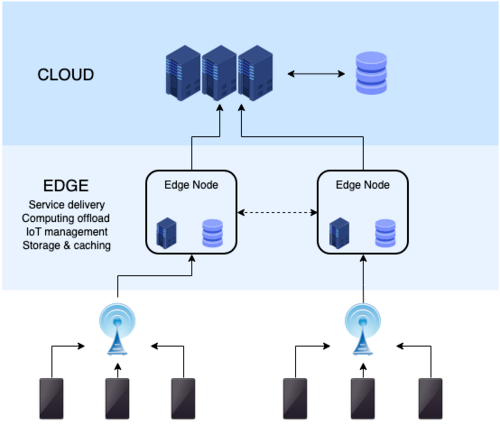

An architecture that combines a cloud service with a computing device near the end user, so that it is able to fulfill a portion of the service functionality seperatly.
Having a centralized cloud server means that sending and reciving
data between the server and users means high latency.
Instead, edge computing offers an alternative. Having a handful of
individual cloud servers (oftain refered to as edge nodes)
strategically located to minize latency for each user.
This means that the user connects to the closest available node, instead of a far away (and possibly busy) server. This closeness is what lowers latency.
Edge nodes distribute requests based on location, traffic, and server health.
What this means is, the probability of a given server getting overwhelmed (and crashing) is extremly low.
Because of intelligent load balancing meaning that servers don't get overwhelemed, this increases the reliability of the service for the users.
Rather then sending clips of ones voice to the cloud,
the voice is first processed (on device) into text.
Only the text would be sent to the could.
We all know that apps you can only use online are annoying.
So, when the services can be done on-device, we all love it!
On-device functionality replacing cloud usage means that no data is sent across the network to big tech giants, who eat up your data like a hungry child.

Spotify's got a lot of songs on their platform.
To help with steaming and downloading of the content, Spotify uses
edge computing.
Each node may have certain songs/tracks/albums already cached, so it doesn't need to dig deep into a database to retrive the files.